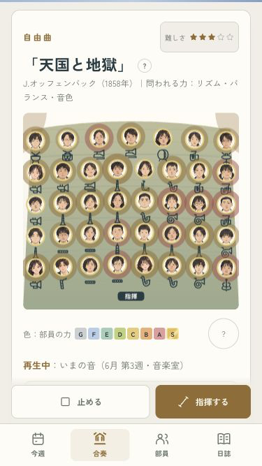
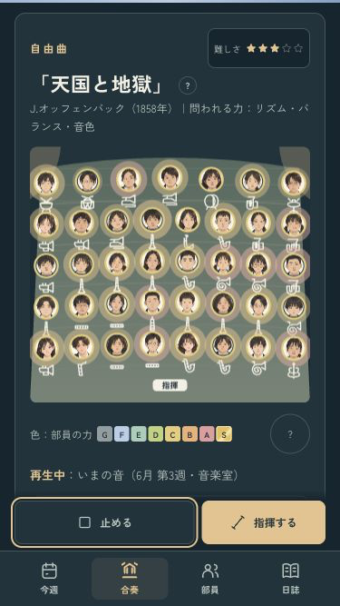

B · 舞台の中へ
再生したら、部員の顔が見える。
診断を読んだ位置から合奏を始めても、舞台全体が見える位置へ。停止ボタンへ操作先を移し、再生と停止を続けて操作できます。


見えている舞台は動かさず、部員カードからの試聴はカードの位置を保持。待機・中止・キーボード操作・1年分の進行を確認済み。
iPhoneへ導入済み。今回は端末ロック中のため起動は未確認です。
ミラーリングなし · codex/design · pushなし · 変更と確認の記録